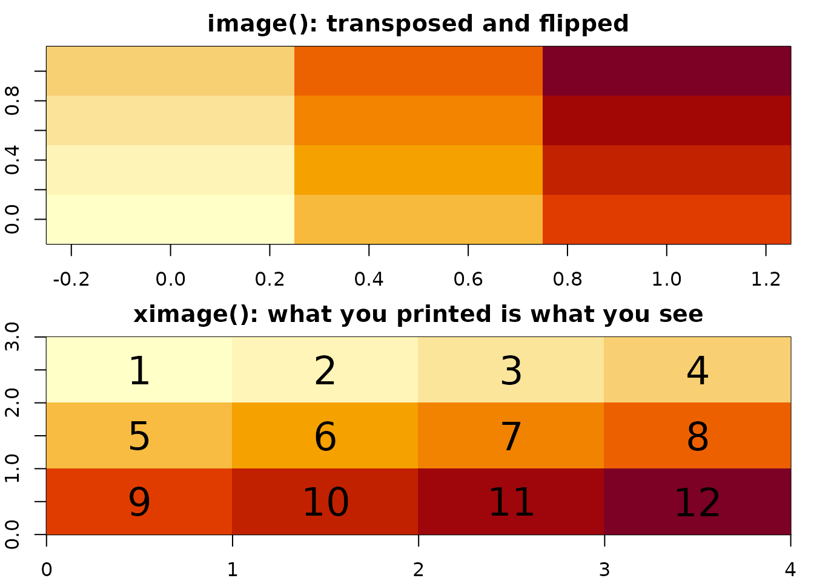
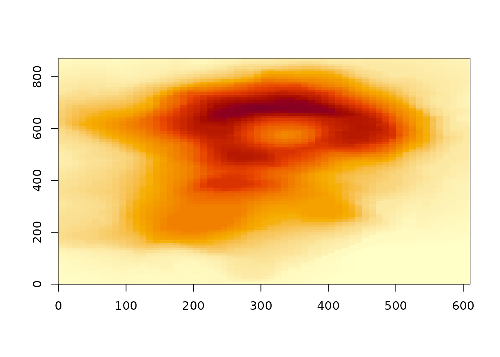
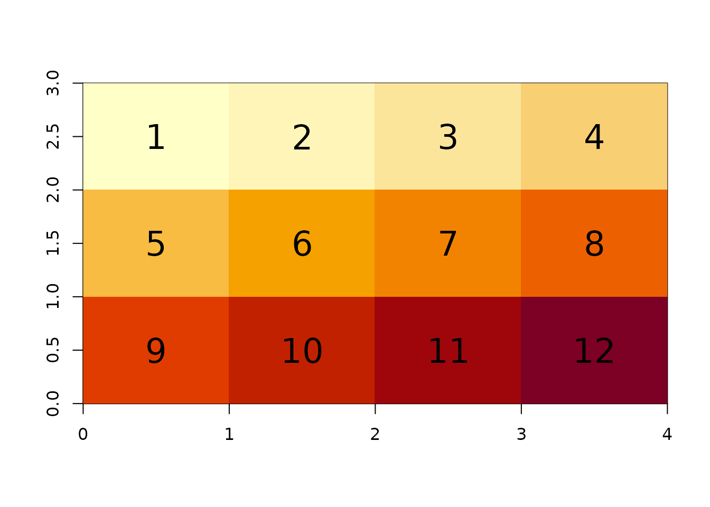
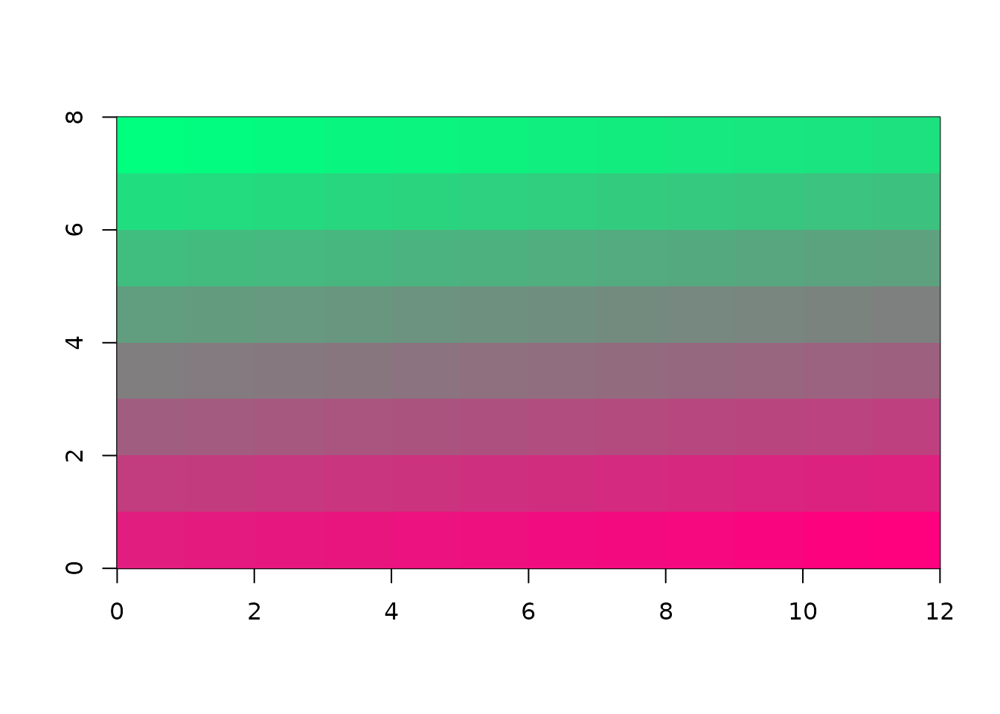

library(ximage)Two functions, and the gap between them
Base R has two ways to draw a grid of pixels, and neither one does the whole job.
image() will map data to colours, but that is where the
good news ends. It cannot handle RGB imagery at all: three channels of
colour have to be converted to a constructed palette before
image(), the list(x, y, z) input convention
with cell-centre coordinate vectors (or cell-edge vectors) is 1990s
legacy that is hard to use, and the default placement of a matrix in the
unit square gives no easy reference to the size or shape of the data
even with aspect ratio set to 1.
rasterImage() draws colours to the device fast, top-left
first, and has done since 2010. But it only takes colours or
R’s native raster or data values within 0,1. It cannot initiate a plot,
something must already have set up a window. It wants separate scalar
parameters for xmin, ymin, xmax, ymax (in that order), and it shares no
input structure with image(), so there is no smooth path
from one to the other.
The mapping function cannot draw properly and the drawing function
cannot map, and moving between them means fighting with the plumbing.
They also disagree about orientation: image() treats a
matrix as a field z(x, y), first dimension along x, y increasing
upwards, so the picture is your matrix transposed and flipped relative
to how it prints. rasterImage() reads top-left first like
most image formats, scanning sensor, spatial data readers, and western
writing. This difference is really confusing, and feels
like it was just unfinished.
m <- matrix(as.double(1:12), 3, byrow = TRUE)
m
#> [,1] [,2] [,3] [,4]
#> [1,] 1 2 3 4
#> [2,] 5 6 7 8
#> [3,] 9 10 11 12
op <- par(mfrow = c(2, 1), mar = c(2, 2, 2, 1))
image(m, main = "image(): transposed and flipped")
ximage(m, main = "ximage(): what you printed is what you see")
xtext(m, add = TRUE, cex = 2)
par(op)ximage is a start on the finish
ximage does everything we had complaints about above: maps values to
colours when you give it data (or passes colours straight through when
you already have them, including RGB arrays and nativeRaster), it
initiates the plot itself from an extent, and it hands the result to
rasterImage() in one consistent raster-order convention.
That gap between the two base functions is the motivation for the
package, and closing it is essentially all ximage does.
ximage(volcano, extent = c(0, 610, 0, 870))
Note: volcano as stored is not Maungawhau’s real
orientation in “north-up” geography, its orientation as a visually
striking example for image() was established in R’s
earliest days: see github
volcano package for the georeferenced truth.
Index space: the default extent
Giving a four-value extent (xmin, xmax, ymin, ymax) is optional. Without one, ximage draws into (0, ncol) x (0, nrow), the index space of the data itself: x measured in columns, y in rows, cell edges on whole numbers. This is the pixel coordinate system of imagery, the space a geotransform maps to the world, so the default means “no georeferencing yet” rather than no meaning at all.
Compare the unit square of image(), which maps every
matrix to (0, 1) x (0, 1) regardless of what it is. An R plot fills the
device by default, its aspect ratio is dynamic, and that is fine on its
own, but a unit square on top of it leaves the data in an entirely
abstract space with no reference to the size or shape of the grid: a 10
x 3000 strip and a square tile draw identically. In index space the axes
report the dimensions, coordinates in add = TRUE overplots
mean cell positions, and one further step recovers the true shape:
asp = 1 makes cells square on the device, so the picture
takes the actual proportions of the data rather than the proportions of
the window. It is not even the unit square, cell centres are
mapped to the bounds 0,1 which means the size of the data gives a
slightly different overlap for the default picture.
The same index space used by ximage is the default in stars and terra
(terra::rast(volcano) reports extent 0, 61, 0, 87) - a
convention this author argued for in both projects early on: a grid’s
natural home is its own dimensions until georeferencing says
otherwise.
Data that already knows its shape
Output from GDAL readers plugs straight in, because those readers report dimension and extent alongside a flat vector of values in scanline order. Both the vapour list format and the gdalraster ‘gis’ attribute format are understood.
d <- vapour::gdal_raster_data(sds::gebco(), target_dim = c(205, 101))
ximage(d[[1]]) ## a correctly oriented map of the worldData that doesn’t: the dimension guess
A bare vector with no attributes is accepted too, and ximage guesses a shape by integer-division detection of the length, preferring the most nearly square factorization and landscape over portrait (in the absence of information, images are mostly wider than tall). The data is assumed to be in raster scanline order, exactly the flat output of a GDAL read, and the message reports the candidate shapes in GDAL dimension order (ncol x nrow) so you can correct a wrong guess by picking a neighbour from the list.
ximage(as.double(1:12))
#> guessing dimension for vector of length 12
#> using ncol x nrow = 4 x 3 (GDAL xsize x ysize), as matrix(x, ncol = 4, byrow = TRUE)
#> candidates (ncol x nrow): 1x12, 2x6, 3x4, [4x3], 6x2, 12x1
xtext(matrix(as.double(1:12), 3, byrow = TRUE), add = TRUE, cex = 2)
The guess is deliberately conservative: numeric data is always treated as one plane of values. Only raw vectors are considered for 3-plane (RGB) and 4-plane (RGBA) pixel-interleaved interpretations, because raw genuinely is byte data and byte image buffers are overwhelmingly stored that way.
nativeRaster
The fastest representation of a colour image in R is not a matrix of
hex strings and not a 3-way array of doubles, it is
nativeRaster: one packed integer per pixel, each int
holding the R, G, B, A bytes, in raster order. That is the layout
rasterImage() consumes natively with no conversion at all,
and ximage passes it straight through.
## a small RGBA image as raw bytes, scanline pixel-interleaved
nc <- 12; nr <- 8
px <- as.raw(c(rbind(seq(0, 255, length.out = nc * nr), ## R ramp
rev(seq(0, 255, length.out = nc * nr)), ## G ramp
127, ## B constant
255))) ## opaque
## those bytes reinterpret directly as nativeRaster, zero restructuring
nn <- readBin(px, "integer", n = length(px) %/% 4L)
dim(nn) <- c(nr, nc)
class(nn) <- "nativeRaster"
ximage(nn)
Notice there is no unpacking step: pixel-interleaved RGBA bytes in scanline order are nativeRaster memory, read four bytes at a time. This is why the raw plane guess is the one clever case ximage keeps, and why a 3-way array of doubles is usually the wrong destination for colour data even when it is a correct one. If you are producing colour imagery in R, produce nativeRaster and everything downstream gets faster.
Neighbours: png, nara, farver
nativeRaster appears in surprisingly few places across R, and there’s
no integration but also very little overlap. The format itself comes
from grDevices (introduced alongside rasterImage() in R
2.11, 2010) but for years the main way to encounter one was
png::readPNG(native = TRUE), and I/O is still the
png/jpeg/fastpng corner: nativeRaster as the thing a decoder hands you
and an encoder accepts, with fastpng adding the width/height/depth
attributed raw vectors that ximage also understands.
coolbutuseless/nara treats nativeRaster as a canvas: a mutable framebuffer of packed ints, drawn on in-place at C speed with points, lines, polygons, blitting and sprite operations, aimed at realtime rendering and games. It converts to and from arrays and rasters for imperative drawing.
farver owns the colour math: vectorized colour space conversion and
encoding without ever touching a string, and
encode_native() / decode_native() map directly
between colour values and the packed integer format. It is the
industrial-strength version of ximage’s to_hex().
ximage’s corner is the data display, just the orientation
and extent bookkeeping that connects scientific arrays and flat GDAL
reads to rasterImage().